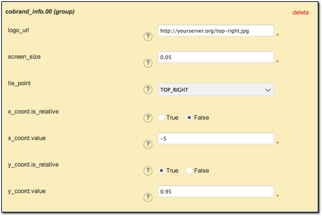
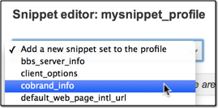
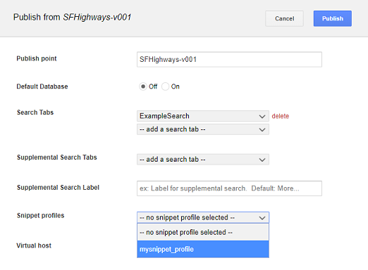
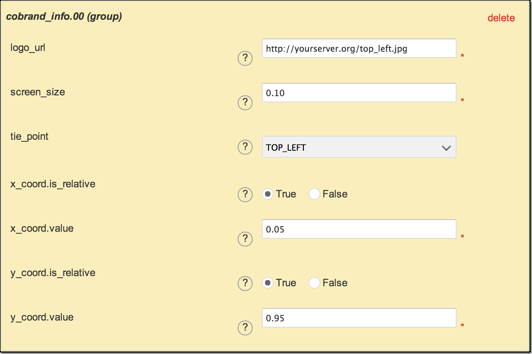
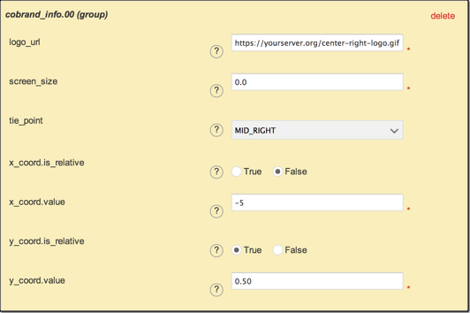
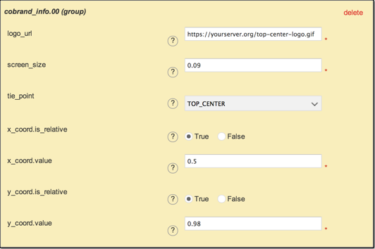
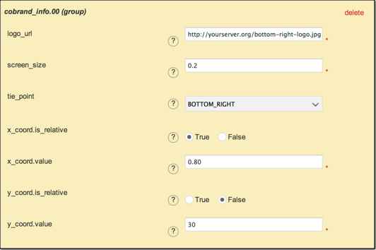
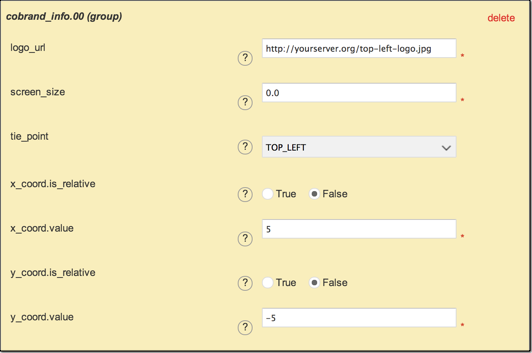

Display custom logos¶
Google Earth Enterprise Client (EC) 5.0 and later can display multiple custom logos with your globes and maps when connected to a GEE Server.
Custom logos are added as database preferences or snippets, which are managed using snippet profiles you create using GEE Server. Once you have saved a custom logo in a snippet profile, you can assign it to any database you publish. You can apply a snippet profile to as many databases as you need.
Cobrand_info snippet
You can use the cobrand_info snippet within a snippet profile to place your logos anywhere in the Google Earth EC window.
The benefits of using cobrand_info are:
- You can access logos at both local and remote addresses (UNC, HTTP, and HTTPS). However, we recommend that you host your logos on GEE Server to ensure accessiblity to the server and Google Earth EC.
- PNG, GIF, and JPEG image formats are supported.
- Transparent logos are supported.
- You can place logos anywhere on the screen.
- You can display multiple logos at the same time.
- You can use either absolute pixel values or relative screen size values to place logos.
- Logos can either be a fixed size or scaled to the width of the screen.
- Logos are included with saved images and printouts from EC.
Cobrand_info snippet definition
You define the cobrand_info snippet by specifying the URL from which the logo will be served, the screen width size, the tie point (which controls the reference point used when overlaying the logo), and x and y coordinates, expressed as either absolute values in pixels or relative values of percentage of screen width or height.
The following cobrand_info example snippet places the top_right.jpg logo in the top-right corner of the window (the top right of the image is 5 pixels from the right edge of the window edge, using an absolute x coordinate value, and 95% from the bottom using a relative y coordinate value), and sets it to dynamically scale to 5% of the screen width as the Google Earth EC window is resized.

Cobrand_info parameters
The following table describes the cobrand_info snippet parameters, all of which are required.
| Name | Description |
|---|---|
logoUrl |
The location of the logo file, e.g.,``http://yourserver.org/top-left-logo.gif`` Logos can be accessed locally or remotely via UNC, HTTP, or HTTPS. Supported logo formats are PNG, GIF, and JPEG. |
screen_size |
Specifies a fraction of window width the logo should be scaled to. Value must be between 0.0 and 1.0, where 0.0 disables the scaling feature. |
tiePoint |
Specifies the part of the logo file that is placed at the specified
|
x_coord.is_relative |
Used in conjunction with
|
x_coord.value |
The EC horizontal (X axis) coordinate for
|
y_coord.is_relative |
Used in conjunction with
|
y_coord.value |
The EC vertical (Y axis) coordinate position for
|
Add a custom logo
You can add any number of custom logos to your maps and globes, adding each one using a cobrand_info snippet. The ideal size for your logo is 64 x 64 pixels.
To add a custom logo:
Upload your logo file to a web server in the network. To host the file on your GEE Server (for example,
http://servername/filename.ext), copy it to/opt/google/gehttpd/htdocs.Access the Google Earth Enterprise Server Admin console in a browser window by going to myserver.mydomainname.com/admin, replacing myserver and mydomainname with your server and domain.
Sign in with the default credentials or the username and password assigned to you:
- Default username: geapacheuser
- Default password: geeadmin
Note
If you do not know your username and password, contact your Google Earth Enterprise Server System Administrator.
Click Snippet profiles to display your snippet profiles.
Click Create New. The Create new snippet profile dialog appears.

Enter a name for the new snippet profile and click Create. The snippet profile name appears in red in the Existing snippet profile list and the Snippet editor opens.
Click the Add a new snippet set to the profile drop-down to display the list of available snippets.
Select the cobrand_info snippet from the list.

Enter a URL for the path of the custom logo. Select whether your x and y coordinate values are expressed as relative or absolute and enter the parameter values. All fields must be completed.

Click Save changes to save the snippet profile.
To apply a custom logo to a globe or map:
In the GEE Server Admin console, click Databases. The list of databases on GEE server appears.
Check the box next to the database to which you want to apply your custom logo. Click Publish. The Publish dialog appears.
Select your snippet profile for your custom logo from the Snippet profiles drop-down list.

Tip
If you have already published your database, you need to Unpublish before publishing again, this time adding your snippet profile to apply your custom logo.
Click the Publish button to publish your database with the added snippet profile.
Now, when you view your database in Google Earth EC, your custom logo is displayed.
Tip
Google Earth EC recognizes only the snippet profile settings made by the first database that you connect to. This applies when you are connecting to multiple databases.
cobrand_info snippet definition examples
Single logo at top-left
This example places one logo in the top-left corner of the window (the top-left of the image is 5% of the window width from the left side of the window, and 95% from the bottom), and sets it to dynamically scale to 10% of the window width as the window is resized.

Single logo at mid right
This example places one logo at the vertical midpoint on the right side of the window using absolute and relative coordinate values. The center-right logo tiePoint is placed 5 pixels from the right window edge and at 50% of the relative window height. EC requests the file using HTTPS (as specified in logo_url) and does not scale the logo.

Single logo at top-center
This example places one logo at the top-center of the window. The top-center tiePoint of the logo is placed, by relative coordinates, at the 50% window width and 98% window height, and the logo dynamically scales to 9% of the window width.

Single logo at bottom-right corner
This example places one logo in the bottom-right corner of the window by combining relative and absolute coordinate values. The bottom-right logo tiePoint is placed at 80% of the window width from the left window edge, leaving a 20% margin at the right window edge, and 30 pixels from the bottom window edge. The logo is dynamically scaled to occupy 20% of the window width.

Single logo at top-left corner
This example places one logo in the top-left corner of the window using absolute pixel values. The top-left logo tiePoint is placed 5 pixels from the left window edge and 5 pixels from the top window edge, and the logo is displayed without scaling.

Learn more